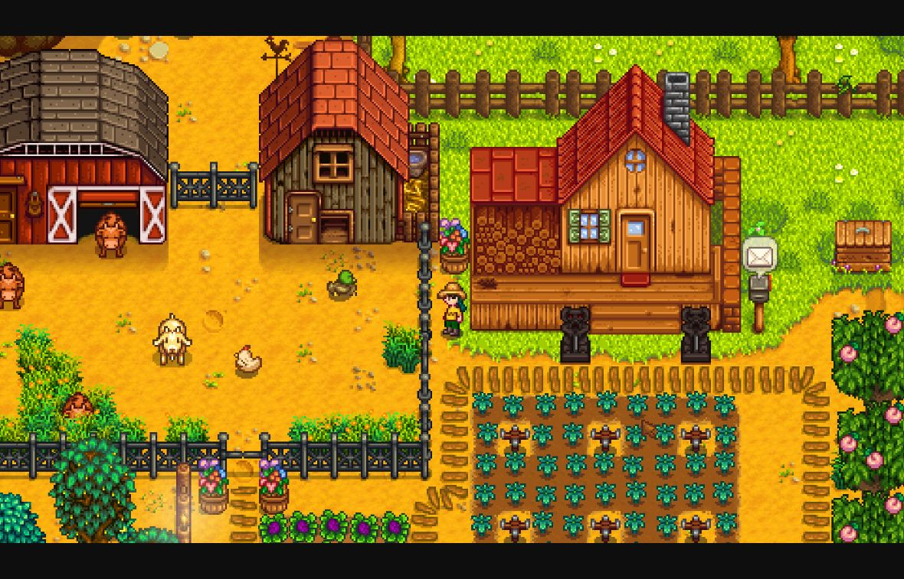
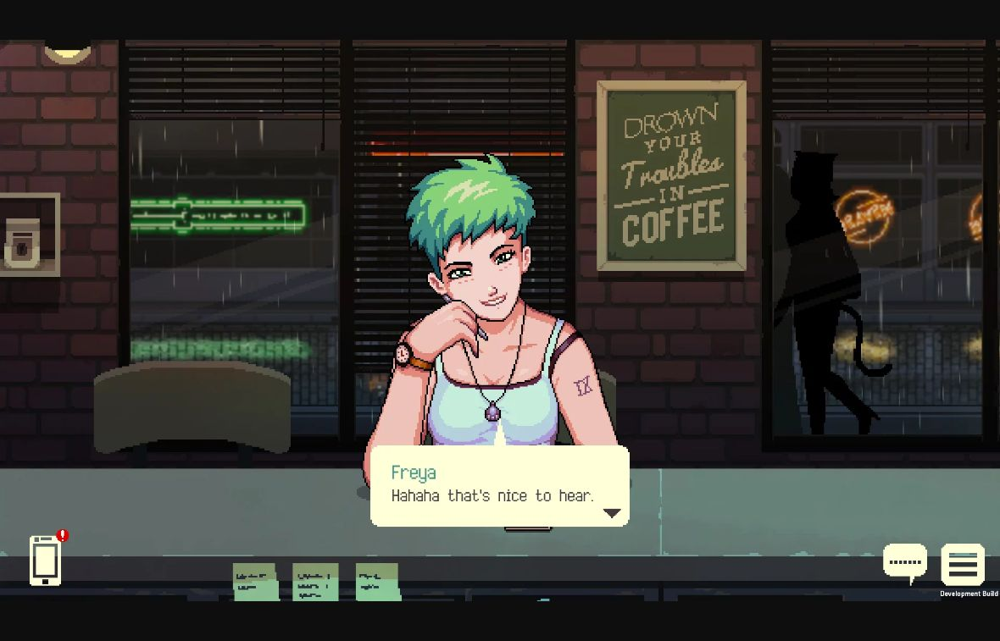
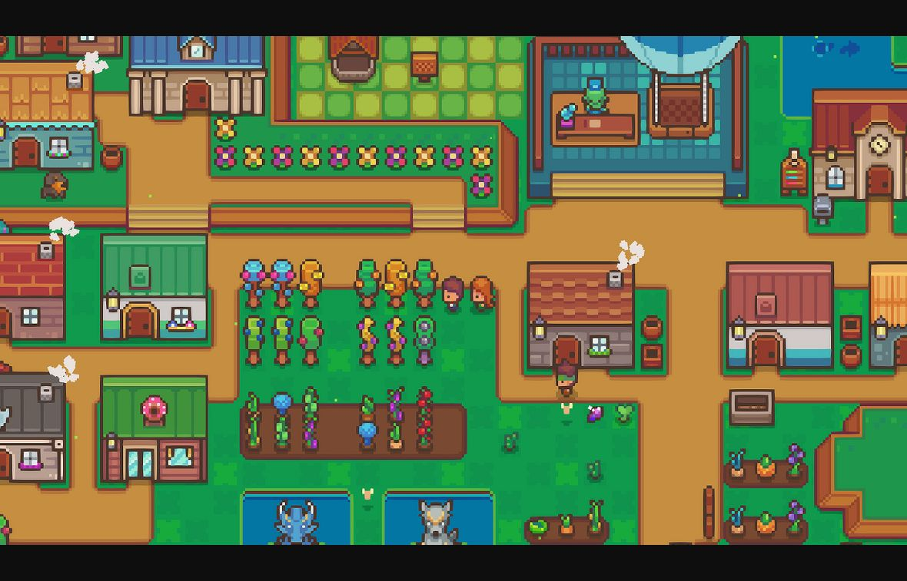

FIELD NOTES / ISSUE 001
治愈系像素风：田园生活、雨夜咖啡馆与迷你村落
本期目录 展开章节
游戏美术风格研究 · 第 001 期
治愈系像素风：田园生活、雨夜咖啡馆与迷你村落 标签：2D
像素美术 生活模拟 叙事
小团队开发
今天选《星露谷物语》《咖啡心语》和《Littlewood》三个案例。它们展示了三条不同的路线：用丰富细节建立生活感，用光线与构图建立陪伴感，用简洁造型建立轻松感。
对你用 AI 做游戏来说，我最建议先研究《Littlewood》的素材组织方式，再借鉴另外两款的色彩与情绪表达。
下面的图片都是真实游戏画面；玩法信息依据官方资料，视觉拆解与制作难度是我的设计判断。后面的尺寸、配色和流程，是为你的练习提出的方案，并非原作参数。
先认识“治愈系像素风”
“像素”描述画面怎样组织，“治愈”描述玩家感受到的情绪。它可以搭配经营、探索、叙事等玩法，也可以采用俯视或固定镜头。
观察这类画面时，可以先找三个东西：
- 让人安心的秩序：道路、房屋、家具和操作区域是否容易理解。
- 值得停留的细节：一只猫、一盏灯、一杯热饮，是否让空间显得有人生活。
- 温和但明确的反馈：采摘、摆放、对话等操作，是否能让玩家清楚地感到“事情变好了”。
像素尺寸小，不代表制作量小。角色转向、家具扩展、季节变化，都会增加整套素材的工作量。
案例一：《星露谷物语》——用“能生活进去的细节”建立归属感

原图片链接已失效，现改用官方 Steam 商店截图的浏览器截图，显示农舍、屋顶、作物与动物。图片来源：官方 Steam 商店。游戏围绕乡村生活展开，包含种植、饲养、采集、社交与家园装饰等内容。官方商店介绍
先看农舍的屋顶、木墙，再看草地、路径和周围摆放的物件。画面的吸引力来自这些东西共同构成了一个可以使用、照料和改变的地方。
配色：暖色建筑提供落脚点，绿色环境提供包围感。
屋顶和木材偏暖，与草木形成区别。即使场景中有很多绿色，你仍然容易找到房子、入口和生活设施。
这给你的启发是：先按用途安排颜色。环境可以相对统一，而入口、重要物件和角色需要更容易辨认。若草地、花朵、人物和建筑都用同样抢眼的颜色，玩家的视线就会分散。
造型：先保证轮廓可认，再添加材质。
树有明确的树冠与树干，房屋有明确的屋顶与墙面，桶罐也有稳定的外形。细节依附在这些大形状上。
做一棵树时，可以先画出“能一眼认出的树冠”，再用几块亮暗色表达体积。过早添加大量独立叶片，会让你花很多时间，却未必提高识别度。
场景与镜头：规则网格帮助玩家安排生活。
略带俯视的视角，让建筑正面和地面布局同时可见。路径、种植区、建筑和生产设施容易被理解为不同的功能区域。
这种组织方式特别适合经营游戏：玩家能看懂空间，也能想象下一步怎样改造它。装饰与生产设施因此都能成为进度的视觉证据。
UI、动画与反馈：让“我做了什么”留下痕迹。
工具栏把常用物件集中起来，图标需要在很小的面积中保持区别。观察动态时，可以重点看挥工具、浇水、收获等动作：动作、声音和物件状态变化共同确认操作。
对你的项目，可以借鉴“空地→播种→成长→收获”的视觉变化。它既传达状态，也让玩家看见自己的投入。
最值得借鉴的三个方法：
- 用清楚的大轮廓承载细节。
- 让场景物件兼具装饰意义和使用意义。
- 通过状态变化，把玩法进度显示在世界里。
制作代价：内容扩展很容易成倍增长。
增加一种作物，可能同时需要种子图标、生长阶段、成熟外观、背包图标和相关反馈。增加一个角色，又会带来方向、动作与表情。
你可以先做一座小院、三种作物和一位邻居，验证这套美术是否能持续扩展。
案例二：《咖啡心语 / Coffee Talk》——用一间室内空间承载陪伴感

原图片链接无法读取，现改用开发商官方 2019 年截图的浏览器截图；包含绿发角色 Freya、吧台和雨窗，画面有 Development Build 标记，不代表当前版本。图片来源：开发商官方页面。官方介绍明确提到，作品受到雨夜热饮、90 年代动画、经典像素冒险游戏与 lo-fi 音乐意象的启发；主要互动是倾听客人和调制饮品。开发商介绍
这张图可以先看绿发客人，再看吧台和窗外。它把人物放在一个稳定、熟悉的空间里，让玩家有时间注意表情和谈话。
配色与光影：深色环境让人物与室内暖色更有存在感。
它说明了一个很有用的原则：治愈感也可以出现在低明度画面中。窗外的夜色与室内的暖色形成关系，空间因此有了“可以待着”的感觉。
你可以尝试限制高亮区域：让人物面部、饮品和少数灯光更醒目，背景保持安静。这样即使没有复杂的动态光照，也能形成视觉重点。
造型：较大的角色画面，把像素投入到表情和个性上。
相比俯视游戏里的小人，这种固定镜头给予人物更多面积。发型、服装、眼睛和姿态都能承担角色塑造。
制作上的区别也很直接：人物不必为了自由移动准备完整的四方向行走，但玩家会长时间盯着脸看，表情变化和局部动画需要更仔细。
构图：吧台建立了稳定的交流关系。
玩家处在服务者的位置，客人在对面。吧台既分隔空间，也把人物、饮品和互动区域联系起来。
对于个人开发者，这类构图值得学习：一个背景可以支持多场对话，但要靠人物变化、场景状态和叙事节奏维持兴趣。
UI、动画与声音：让阅读顺畅，让空间持续有生命。
文字承载主要信息，因此对话区的辨识度比装饰更重要。中文项目尤其要实测字号、换行和长句显示，不能照搬英文像素字的尺寸。
动态参考可以看 发行商预告片，观察人物局部变化、窗外运动和操作切换。静态截图能帮助分析构图，节奏仍需要通过视频判断。
最值得借鉴的三个方法：
- 将明暗对比集中在谈话对象与关键物件上。
- 固定主要构图，把制作资源投入人物与状态变化。
- 用小幅动画和环境声音延续空间氛围。
制作代价：场景数量较少，单个画面的要求更高。
背景会被反复观看，人物表情也容易暴露不一致。你用 AI 生成角色时，尤其要检查眼睛位置、发型轮廓、肩宽和服装细节。
若你的项目偏叙事或店铺经营，可以先做“一间店、两位客人、三种饮品”，验证这条路线。
案例三：《Littlewood》——用简洁、统一的模块，让建设变得轻松

原图片链接无法读取，现改用官方 Steam 商店村落截图的浏览器截图，用于观察美术风格。图片来源：官方 Steam 商店。游戏围绕重建村落、收集材料和发展居民关系展开。官方商店介绍
画面中的房屋、道路、市场设施和人物都很紧凑。它给人的轻松感，一部分来自你能很快理解“这里有什么”。
配色：大面积底色统一，小面积颜色区分对象。
浅暖色地面将空间连接起来，屋顶、植物和人物用相对集中的颜色形成区别。画面不需要给每一块地面都添加复杂纹理。
对 AI 素材很实用的一点是：先确定公共色板。树、房屋和人物共享一些阴影色、木材色与强调色，拼在一起更容易协调。
造型：删掉细节以后，物件仍然成立。
小人、房屋和设施都依靠简化轮廓表达身份。人物的发色、衣服色块和少量特征，可以比复杂的面部纹理更有效。
你可以做一个检查：把素材缩小到实际游戏尺寸，看看它是否仍然容易认。若只有放大四倍才能看出精心添加的细节，这些细节可能并不值得优先制作。
场景与镜头：模块化方便玩家重新安排。
略带俯视的画面让建筑、路径和地面关系清楚。房屋、树木和设施像一套相互兼容的积木，适合摆放与扩展。
这里最值得学的是统一的“尺寸语言”：人物相对门有多高，树相对房子有多大，道路需要多宽。比例统一之后，增加新物件会容易很多。
UI与交互：信息集中，空间保持可读。
本张替换截图用于观察村落布局，没有显示顶部日期界面；具体 UI 应另行结合实机或视频观察。对建造玩法来说，选中位置、可放置范围和阻挡关系也需要明确。
即使最终使用像素 UI，文字、按钮点击区域和提示反馈仍要按实际操作体验设计。
最值得借鉴的三个方法：
- 用轮廓、比例和少量色块区分对象。
- 让地面纹理保持克制，给重要物件留出辨识空间。
- 把新素材放进已有地图，检查它与整套模块是否兼容。
制作代价：细节较少，比例错误会更显眼。
少一个像素的脸部位置、过大的门或过厚的描边，都可能破坏统一感。但相较于高细节路线，它更适合作为你第一套可扩展的美术练习。
把三种路线放在一起比较
以下难度比较针对“做出具有相似组织方式的小型原创场景”，并非对完整游戏开发量的评估。
| 维度 | 《星露谷物语》 | 《咖啡心语》 | 《Littlewood》 |
|---|---|---|---|
| 主要情绪 | 生活充实、逐渐归属 | 安静、陪伴、夜间庇护 | 轻快、可掌控 |
| 配色重点 | 自然环境与暖色建筑 | 深色环境与局部暖色 | 统一底色与清楚色块 |
| 造型 | 小角色，物件种类丰富 | 较大人物，突出表情 | 简化轮廓，紧凑比例 |
| 细节密度 | 中高 | 人物和重点背景较高 | 相对较低 |
| 镜头 | 略俯视、地图移动 | 固定室内交流镜头 | 略俯视、村落布局 |
| 主要制作压力 | 素材数量与状态变化 | 人物一致性与画面精度 | 模块比例与整体统一 |
| 适合先练什么 | 小院与作物成长 | 吧台与人物表情 | 小地图与建筑摆放 |
它们共同值得学习的是：重要物件容易识别，空间有清楚的组织，细节围绕玩家正在做的事情展开。
可以自由调整的是明暗、颜色鲜艳程度、像素尺寸和细节数量。做治愈系游戏，不必把这些都固定成同一种样子。
你怎样用 AI 做出一套能用的像素美术
对你的第一套素材，我建议采用：
图像 AI 探索方向 → Aseprite 整理像素与动画 → 游戏引擎实测。
工具先控制在少量，重点是建立稳定流程。
| 环节 | AI 的适用程度：我的制作判断 | 你需要控制的部分 |
|---|---|---|
| 配色、氛围、构图探索 | 高 | 选择统一方向 |
| 角色与场景概念 | 高 | 筛选造型，明确比例 |
| 静态道具、图标初稿 | 中 | 清理轮廓、颜色与尺寸 |
| 可拼接地图图块 | 中低 | 检查边缘、转角与重复纹理 |
| 同角色多方向、多动作 | 中低 | 保持体型、装备与定位一致 |
| 循环动画、游戏特效 | 可辅助构思 | 修正帧间变化、节奏和衔接 |
这不是对某款模型的实测评分。不同模型结果会有差异，最终要用一小批真实任务来验证。
第一步：先定一张风格规格卡。
下面这套适合练习原创的“森林小院”，参数可以调整：
- 镜头：固定的略俯视 2D，建筑能看见正面。
- 基础图块：16×16 像素；人物画布可从 16×24 开始。
- 比例：人物约两头身，树高约为人物的两到三倍，门与人物尺寸协调。
- 配色：先限制在约 16—24 色；以草绿、暖棕、米黄为主。
- 光照：统一左上方来光，单个物件通常使用两到三个明暗层次。
- 轮廓：使用较深的同色系轮廓，避免每件物品都有不同粗细的边。
- 纹理：大色块优先，细节集中在轮廓和识别特征上。
- 文件：地面、建筑、道具、人物和 UI 分开保存；物件背景使用真实透明通道。
色板可以先试：奶油白 #F5E6C8、浅土色
#D9B58C、木棕 #A9714B、深棕
#59443F、草绿 #91AD67、深绿
#526C4A。这是练习用的起点，并非从原作精确取色。
第二步：让 AI 探索少量场景方案，选定一张母版。
先生成同一个小院的几种版本，比较建筑轮廓、植物形状、色彩与可行走区域。选定之后，后续素材都对照这张母版。
以 Adobe Firefly 为例，当前官方文档提供风格参考与构图参考：前者引导外观，后者帮助约束画面布局。它们可以辅助保持方向，但不能代替尺寸和一致性检查。风格参考说明、构图参考说明
第三步：按物件生成，并尽早放在一起。
第一批只做草地、道路、小屋、一棵树、一盆花和一个人物。
每生成一个新物件，就与已有素材放在同一张测试图里。检查光照、比例、轮廓与细节密度；不要等几十张图都生成后才发现它们不协调。
角色先确定一个标准姿态，再扩展其他方向。衣服上的标记、背包和工具要逐项核对，左右翻转未必符合角色设定。
第四步：在 Aseprite 中完成像素整理。
Aseprite 支持像素绘制、动画、图块与精灵表导出，适合把候选图整理成游戏素材。官方文档
重点处理：
- 将素材整理到目标画布，并统一色板。
- 清除杂点、模糊边缘和不必要的半透明像素。
- 在深色、浅色背景上检查透明边缘，排除白边和假棋盘格。
- 为动画帧固定脚底位置，避免人物上下跳动。
- 把地面图块重复铺开，检查接缝和明显重复图案。Aseprite 的 Tilemap 可以复用同一组图块，便于测试。图块说明
提示词中的“32×32”“16 色”只能表达要求。模型输出是否严格符合，需要实际检查。把大图缩小也只是整理的起点，仍可能丢失轮廓、产生杂色。
第五步：进入游戏，检查动态效果。
以 Godot 为例，可使用最近邻纹理过滤保持像素边缘，并用合适的基础分辨率与整数缩放避免像素宽度不均。纹理过滤说明、分辨率与缩放说明
随后测试人物走过树木、接近房门和操作物件的效果。碰撞范围通常需要围绕树干、墙体等阻挡部分设置；树冠还涉及前后遮挡。图像本身不会自动提供这些关系。
UI 文字也要在实际窗口中检查。中文可以采用清楚的字体，搭配像素边框与图标，让阅读保持轻松。
可以直接修改使用的 AI 提示词
这条用于生成单个道具候选图。先附上你选定的原创母版，再替换物件名称；尺寸与颜色限制仍需在输出后验证。
请以附图作为本项目的美术参考，为原创的治愈系森林生活游戏设计一个【物件名称，例如木制邮箱】。
保持参考图中的视角、物件比例、色彩关系、轮廓粗细和细节密度。采用固定略俯视视角，能够看见物件正面，统一左上方来光。
造型圆润、轮廓清楚，以暖棕、米黄和柔和绿色为主。优先使用完整的大色块，每种材质使用少量明暗层次，减少零散噪点。
当前只输出一个完整物件，居中展示并保留边距。以最终适合整理到【32×32】像素画布为设计目标；这个尺寸表示细节预算，不要添加缩小后无法辨认的复杂装饰。
如工具支持，请输出真实透明背景；不支持时使用纯色背景便于后续处理。不要绘制棋盘格背景、文字、水印、展示边框或额外场景。
使用时，除了提示词，还要固定母版和风格规格卡。提示词负责描述要求，你负责判断这件物品是否能与已有素材放在一起。
今天的 60 分钟练习：做一座“可以走进去的小院”
成果控制为：一块地面、一条道路、一间小屋、一棵树、一个花盆和一个人物占位图。
- 前 10 分钟：选定色板，画出人物、门和树的相对大小。
- 10—25 分钟：用 AI 探索小屋与树的造型，各选一个候选。
- 25—45 分钟：在 Aseprite 中整理轮廓、颜色、尺寸与透明边缘，铺成小场景。
- 45—60 分钟：放进现有游戏项目，测试行走、遮挡和一个简单交互，例如靠近花盆显示提示。
如果暂时不会像素绘制，今天可以只完成静态场景，把引擎测试留到下一次练习。
验收时看这五项：
- 在实际游戏尺寸下，能立刻找到人物、入口和道路。
- 小屋、树、花盆的光照与轮廓像出自同一套素材。
- 地面重复铺设后没有明显接缝或突兀条纹。
- 人物移动时脚底稳定，树冠遮挡与碰撞关系合理。
- 换一个物件加入场景后，仍能按同一套规则整理进去。
今天最值得保留的三条观察是：《星露谷物语》让变化成为生活的痕迹；《咖啡心语》把注意力留给人物与谈话；《Littlewood》让简洁的模块支撑自由建设。 你的第一套原创素材，可以从《Littlewood》式的简洁程度起步，再逐渐增加生活细节与光线层次。
参考图片与来源
以下链接前往官方或原始发布页面。图片已保存在本镜像中；外部页面的可用性由来源网站决定。
- Stardew Valley · 原始来源 ↗
Official farm screenshot with warm wooden farmhouse, crops and animals.
- Coffee Talk · 原始来源 ↗
Official 2019 development-build screenshot: green-haired Freya at counter, rain and dark windows; development-build mark visible.
- Littlewood · 原始来源 ↗
Official village screenshot with simple buildings, warm paths and green ground. No top date UI is visible in this replacement.